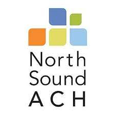
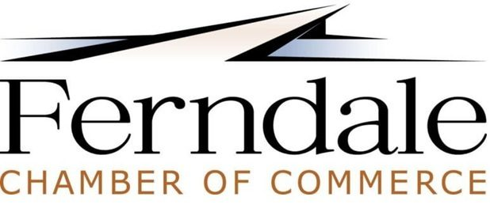
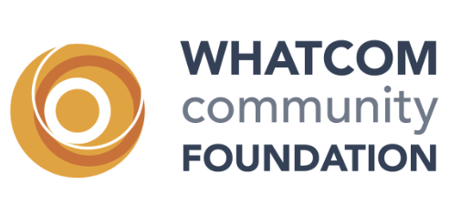

North Sound ACH
Ferndale Chamber of Commerce
Whatcom Community Foundationkū cumber SKIN LOUNGE
We’re proud to partner with kū cumber SKIN LOUNGE to provide an exceptional venue for your celebrations. Whether you’re planning a birthday party, community gathering, or special event, this beautiful space offers the perfect atmosphere for memorable moments while supporting our mission.
Experience the venue

North Sound ACH
We’re proud to partner with North Sound ACH (North Sound Accountable Community of Health), an organization committed to improving health and well-being across our region. Together, we work to connect community members with the resources and support they need to thrive.
Ferndale Chamber of Commerce
We’re proud to partner with the Ferndale Chamber of Commerce, a dedicated organization that supports local businesses and strengthens the Ferndale community. Their commitment to fostering connections, economic growth, and community engagement aligns with our mission to build a stronger, more supportive environment for the youth and families we serve.
Whatcom Community Foundation
We are deeply grateful to the Whatcom Community Foundation for their generous support of our work. Since 1996, the Foundation has connected people, ideas, and resources across Whatcom County so that communities can flourish. Their investment in A Better Way Out helps us bring mentorship, guidance, and hope to the youth and returning citizens we serve.